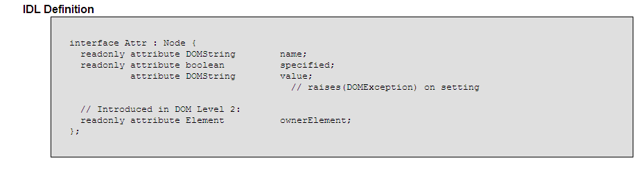

JavaScript Temelleri
Bölüm 19
W3C Belge Nesne Modeli (W3C Document Object Model) (W3C-DOM)
Bölüm 19.6.6 Sayfa 1
19.6.6 - Attr (Nitelikler) Arabirimi
Attrs arabirimi, bir element düğümünün niteliklerinin oluşturduğu nitelik düğümlerinin özelliklerini belirten arabirimdir. Net olarak, bir Node generik düğüm tipinin, attributes koleksiyonunun, her bir item yani birimi, burada incelenen, Attr arabirimi tanımına uyan nitelik düğümlerine karşılık gelir. Nitelik düğümleri sayfa ağaç yapısına tam olarak yerleştirilmiş sayılmazlar. Bunlar ilgili oldukları element düğümü ile birlikte yaşama geçen ve element düğümünü saran bir tür elektron bulutu gibi düşünülebilrler. Bağlı oldukları element düğümü, belge ağacını terkederse, etrafındaki nitelik düğümleri bulutu da belge ağacını terketmiş olur. Bunun sonucunda da özelliklerini kalıtımla elde ettiği generik düğüm tipi Node arabirimin, parentNode, previousSibling, nextSibling özellikleri, nitelik düğümleri için null değerini döndürür. Özetle, nitelik düğümleri, generik düğüm nesnesinden katımla özellik elde eder, fakat diğer düğüm türlerine göre oldukça özeldir.

Şekil 19.6.6- 1 - DOM Düzey 2 de Attr Arabiriminin IDL Yazılımı
Attr arabirimin, name özelliği, niteliği ismin karakter dizgisi (String) tipinde olarak geri döndürür. Aynı sonuç, generik düğüm türü Node arabiriminin nodeName niteliğinin sorgulanması ile de alınabilir. Kullanımı,
nitelikİsmi = generikDüğümNesnesiÖrneği.attributes.item(x).name;
veya eşdeğer olarak,
nitelikİsmi = generikDüğümNesnesiÖrneği.attributes.item(x).nodeName;
şeklinde bir düğüm nesnesi örneğinin x inci niteliğinin ismine ulaşılabilir.
Attrs arabiriminin, name özelliği salt okunur niteliktedir. Bu Özelliğin değerleri, DTD lerde önceden belirlenmiş değerlerdir.
Aşağıda kodları görülen uygulama, bir element düğümünün niteliklerini bir sayfaya yazdırmaktadır.
/* <![CDATA[ */ function başlat() { var elementDüğümü = document.getElementById('hedef'), sonuçlar = document.getElementById('sonuç'); for (var i = 0; i <elementDüğümü.attributes.length ; i ++) { bilgiYaz('nitelik item(' + i + ').name : ' + elementDüğümü.attributes .item(i).value, 'sonuç'); sonuçlar.appendChild(document.createElement('BR')); } sayfaYüklenmesiTamamlandıktanSonraÇalıştır(başlat); /* ]]> */
Attr arabiriminin tanımladığı nitelik düğümlerinin, salt okunur bir başka özelliği, mantıksal (boolean) tipte specified değeridir. Bu özelliğin değeri,
Bu değerlendirilmesi kolay olmayan niteliğin kullanım alanı fazla değildir.
Attr arabiriminin tanımladığı nitelik düğümlerinin, value özellikleri, okunabilir ve yazılabilir tipte bir özelliktir. Eğer değer verilemeyen bir niteliğe değer verilmeye çalışılırsa, bir hata oluşur.
Bu metot, değerin okunması amacı ile çağrılırsa, geriye bir karakter dizgisi tipinde veri (string) döndürür. Değer belirtmek amacı ile çağrıldığında, bir Text tipi dğüm oluşturur. Bu düğümün içeriği, çözümlenmeiş olan karakter değerleridir.
Attrs arabiriminin value özelliğinin, bir element düğümünün içeriğinin stil sınıfının değerinin değiştirlmesi amacı ile uygulandığı bir programın kodları aşağıda görülmektedir. Bu program, bağlantılı olduğu sayfada çalışmaktadır.